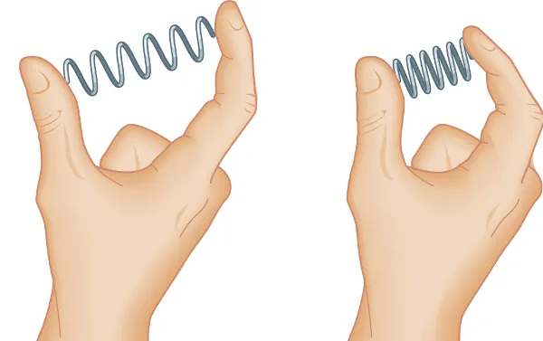

Força Elástica
Força Elástica é a força exercida sobre um corpo que possui elasticidade, por exemplo, uma mola, borracha ou elástico. Essa força determina, portanto, a deformação desse corpo quando ele se estica ou se comprime. Isso dependerá da direção da força aplicada.
Como exemplo, pensemos numa mola presa num suporte. Se não houver uma força atuante sobre ela, dizemos que ela está em repouso. Por sua vez, quando esticamos essa mola, ela criará uma força em sentido contrário.
Fórmula da Força Elástica:
Para calcular a força elástica, utilizamos uma fórmula elaborada pelo cientista inglês Robert Hooke (1635-1703), chamada de Lei de Hooke da força elástica.
F = K ⋅ x
Onde:
F: força aplicada no corpo elástico (N)
K: constante elástica (N/m)
x: variação sofrida pelo corpo elástico (m)
Energia Potencial Elástica:
A energia associada a força elástica é chamada de energia potencial elástica. Ela está relacionada com o trabalho realizado pela força elástica do corpo que vai da posição inicial até a posição deformada.
A fórmula para calcular a energia potencial elástica é expressa da seguinte forma:
Onde:
EPe: energia potencial elástica
K: constante elástica (N/m)
x: medida da deformação do corpo elástico